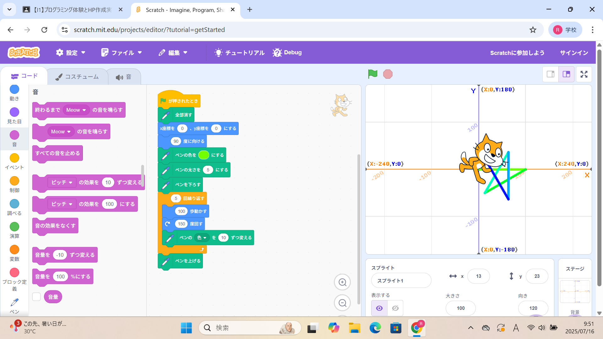
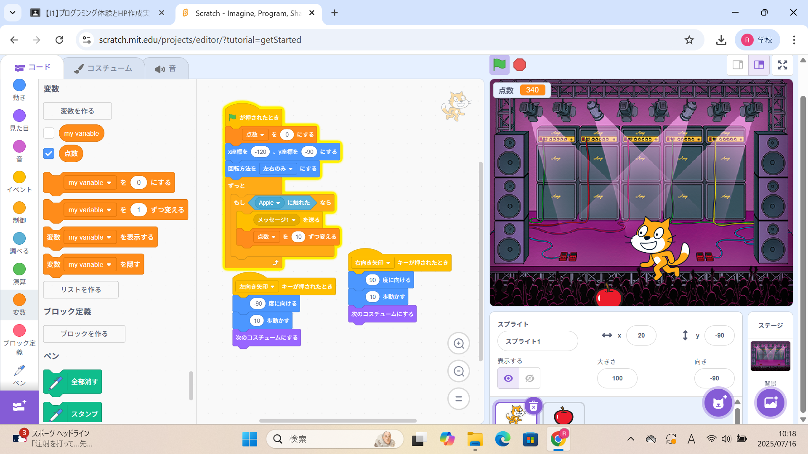

1週目のレポート ： 公大高専１年実習I-1
1a班16番 ko-gann
第1週目
1-1 サイエンスアート

1.内容
スクラッチを使ってプログラミングを行った。猫を動かしその動いた場所に線を描くことでサイエンスアートとして絵を作成した。
角度や歩く歩数、座標などを細かく設定してプログラミングを行った。
2.感想
私はサイエンスアートで実際に猫を動かし絵をかくのは初めての体験だったのであまりうまくいかなかった。しかし、角度を調整したり、歩く歩数、座標を変更するなどの試行錯誤を 重ねることが完成への第１歩になると感じた。
1-2 ゲーム

1.内容
スクラッチを使用してリンゴキャッチゲームを作成した。スクラッチの猫の動きを左右だけに絞ったり音楽を追加、スコアを出すなどしてよりゲームっぽく作ることができた。
また猫のプログラムだけでなく、リンゴにもプログラムを作成した。リンゴが降ってくるｘ座標を乱数にすることでより難しいゲームにすることができた。
2.感想
スクラッチでゲームが作れたことに驚いた。簡単に作れそうなゲームでもリンゴが降ってくる座標を乱数でランダムにするなど細かい工夫が大切だと感じた。
また、これ以外の工夫を追加することでより楽しいゲームが作れると感じたのでより詳しく扱えるようになりたいと感じました。
1-3 ホームページ作成
私のホームページ
1.内容
htmlを使用して、ホームページを作成して、レポートを書いた。
改行や、入力などの意味を持った文字列があり、それらを活用して、文章を作成した
2.感想
二週目にホームページを作ることができた。こんなに簡単にホームページを作れて、インターネットに発信ができるんだと初めて知ったのでびっくりした。
将来エンジニアになったときに、役立つ技術だと思うので覚えておきたいです。
各ページへのリンク
1週目のレポート
2週目のレポート
3週目のレポート
私のホームページ